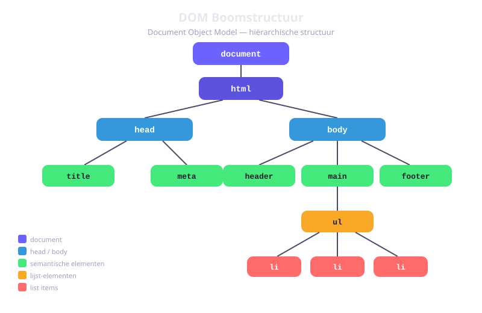
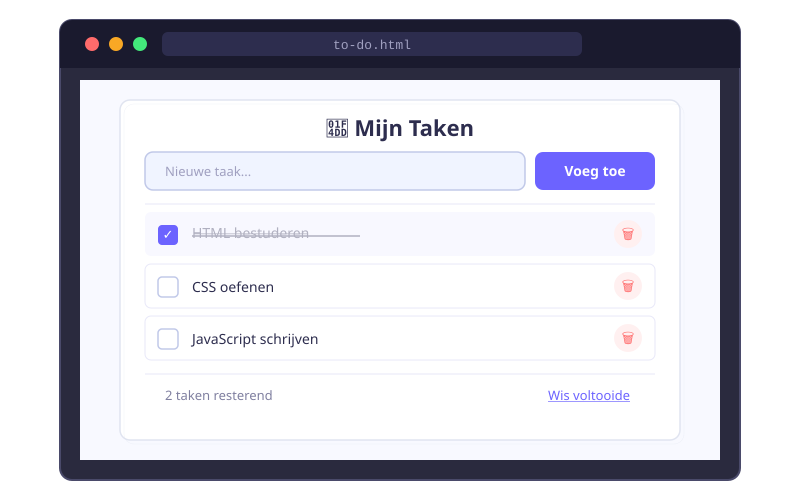

DOM Manipulatie
- Uitleggen wat het DOM is en hoe het is opgebouwd als een boomstructuur
- HTML-elementen selecteren met
querySelector,querySelectorAll,getElementById - De inhoud van elementen aanpassen met
textContenteninnerHTMLen het verschil uitleggen - Stijlen en klassen dynamisch aanpassen via
element.styleenclassList - Nieuwe HTML-elementen aanmaken en op de correcte positie invoegen
- Elementen verwijderen uit het DOM
- Attributen lezen, instellen en verwijderen
- Een dynamische to-do-lijst bouwen met enkel JavaScript DOM-methodes
- De browser DevTools gebruiken om JavaScript-fouten te vinden en op te lossen
4.1 Wat is het DOM?
Wanneer een browser een HTML-bestand laadt, analyseert hij de code en zet die om naar een boomstructuur in het geheugen. Die boomstructuur heet het Document Object Model, kortweg DOM.
Het DOM is de brug tussen je HTML en JavaScript. Via het DOM kan JavaScript de pagina lezen én aanpassen — zonder dat je de pagina opnieuw moet laden.
<!-- HTML wordt door de browser omgezet naar een boom -->
<body>
<h1>Welkom</h1>
<ul>
<li>Item 1</li>
<li>Item 2</li>
</ul>
</body>Elke node heeft: een parent (de node erboven), nul of meer children (de nodes eronder) en eventueel siblings (broers/zussen op hetzelfde niveau). Het globale object document is het startpunt.

head/body > div/p/ul etc, met pijlen die parent-child relatie tonen" loading="lazy">4.2 Elementen selecteren
querySelector — één element
querySelector geeft het eerste element dat overeenkomt met een CSS-selector.
// Selecteer het eerste <h1>-element
const titel = document.querySelector('h1');
// Selecteer op id
const bericht = document.querySelector('#welkomstbericht');
// Selecteer op klasse
const actief = document.querySelector('.actief');
// Selecteer eerste <li> binnen een ul.menu
const eersteMenuItem = document.querySelector('ul.menu li');
// Als het niet bestaat → null
const knop = document.querySelector('#bewaar-knop');
if (knop !== null) {
// doe iets met knop
}querySelectorAll — meerdere elementen
const items = document.querySelectorAll('li');
items.forEach(function(item) {
console.log(item.textContent);
});getElementById en getElementsByClassName
// Selecteer één element op basis van id (zonder #)
const container = document.getElementById('hoofd-container');
// Selecteer alle elementen met een bepaalde klasse (zonder .)
const kaarten = document.getElementsByClassName('kaart');In nieuwe code gebruik je bij voorkeur querySelector en querySelectorAll — ze zijn flexibeler en consistenter.
4.3 Inhoud aanpassen
textContent — veilige tekst
textContent leest of schrijft pure tekst, zonder HTML-opmaak.
const paragraaf = document.querySelector('p');
// Inhoud lezen
console.log(paragraaf.textContent);
// Inhoud overschrijven
paragraaf.textContent = 'Nieuwe tekst!';
// HTML-tags worden als gewone tekst getoond
paragraaf.textContent = '<strong>Vet</strong>'; // toont letterlijk: <strong>Vet</strong>innerHTML — HTML-opmaak
const box = document.querySelector('.box');
// HTML invoegen — de browser parseert en maakt elementen aan
box.innerHTML = '<strong>Vet</strong> en <em>cursief</em>';Zet nooit gebruikersinput rechtstreeks in innerHTML. Dit opent de deur voor XSS-aanvallen (Cross-Site Scripting). Gebruik textContent voor gebruikersinput — dit behandelt alles als pure tekst en is veilig.
4.4 Stijl en klassen
element.style — inline stijlen
const box = document.querySelector('.box');
// CSS: background-color → JS: backgroundColor
box.style.backgroundColor = 'tomato';
box.style.fontSize = '24px';
box.style.borderTopWidth = '2px';
// Stijl verwijderen: instellen op lege string
box.style.backgroundColor = '';classList — klassen toevoegen en verwijderen
const knop = document.querySelector('.knop');
knop.classList.add('actief');
knop.classList.remove('actief');
knop.classList.toggle('actief'); // voeg toe als niet aanwezig, verwijder als aanwezig
if (knop.classList.contains('actief')) {
console.log('De knop is actief');
}
// Meerdere klassen tegelijk
knop.classList.add('groot', 'gemarkeerd', 'zichtbaar');4.5 Elementen aanmaken en toevoegen
createElement en appendChild
// Stap 1: nieuw element aanmaken
const nieuwLi = document.createElement('li');
// Stap 2: inhoud geven
nieuwLi.textContent = 'Nieuw item';
// Stap 3: toevoegen aan bestaand element (aan het einde)
const lijst = document.querySelector('ul');
lijst.appendChild(nieuwLi);prepend — toevoegen aan het begin
const lijst = document.querySelector('ul');
const eersteItem = document.createElement('li');
eersteItem.textContent = 'Ik kom eerst!';
lijst.prepend(eersteItem);insertAdjacentHTML
const element = document.querySelector('.referentie');
element.insertAdjacentHTML('beforebegin', '<p>Voor het element</p>');
element.insertAdjacentHTML('afterbegin', '<p>Begin van element</p>');
element.insertAdjacentHTML('beforeend', '<p>Einde van element</p>');
element.insertAdjacentHTML('afterend', '<p>Na het element</p>');4.6 Elementen verwijderen
// Eenvoudigste manier
const teVerwijderen = document.querySelector('.oud-bericht');
teVerwijderen.remove();
// Oudere methode via parent
const lijst = document.querySelector('ul');
const eersteItem = lijst.querySelector('li');
lijst.removeChild(eersteItem);
// Verwijder het element dat je aanklikt
const items = document.querySelectorAll('.item');
items.forEach(function(item) {
item.addEventListener('click', function() {
item.remove();
});
});4.7 Attributen
const afbeelding = document.querySelector('img');
// Attribuut lezen
const bron = afbeelding.getAttribute('src');
// Attribuut instellen
afbeelding.setAttribute('src', 'nieuwe-foto.jpg');
afbeelding.setAttribute('alt', 'Een nieuwe foto');
// Controleren of een attribuut bestaat
if (afbeelding.hasAttribute('alt')) {
console.log('De afbeelding heeft een alt-tekst');
}
// Attribuut verwijderen
afbeelding.removeAttribute('disabled');
// Directe properties (handiger voor veelgebruikte attributen)
const invoer = document.querySelector('input');
invoer.value = 'Nieuwe waarde';
invoer.disabled = true;
invoer.placeholder = 'Typ hier...';4.8 Debuggen met DevTools
Fouten in JavaScript zijn normaal. Een professionele developer zoekt niet willekeurig — die gebruikt de ingebouwde DevTools van de browser. Open ze met F12 of rechtsklik op de pagina → Inspecteren.
De Console-tab
De console is je belangrijkste debugtool. Gebruik console-methodes om waarden te inspecteren:
console.log('Waarde van naam:', naam); // toon een waarde
console.error('Fout:', error.message); // rode foutmelding
console.warn('Opgelet:', 'deprecated'); // gele waarschuwing
console.table(gebruikers); // toon een array als tabelVeelgemaakte foutmeldingen en wat ze betekenen:
ReferenceError: naam is not defined— de variabele bestaat niet of is verkeerd gespeldTypeError: null is not an object— je probeert een property te lezen van iets datnullisTypeError: voegToe is not a function— de naam klopt niet of de functie is niet geladen
Als je een fout ziet in de console, klik dan op de bestandsnaam rechts van de fout (bv. app.js:42). De browser springt direct naar die lijn.
De Elements-tab
Na DOM-manipulatie kun je in de Elements-tab live zien wat er veranderd is. Hover over een element om de bijhorende CSS te zien. Dubbelklik om tijdelijk tekst te wijzigen. Dit is ideaal om te controleren of je createElement- en appendChild-code het gewenste resultaat oplevert.
Breakpoints in de Sources-tab
Een breakpoint pauzeert je code op een bepaalde lijn zodat je de waarden van variabelen kunt inspecteren:
- Open de Sources-tab in DevTools
- Klik op het lijnnummer naast je code → een blauwe stip verschijnt
- Voer de actie uit in de browser die de code triggert
- De code pauzeert — bekijk variabelenwaarden in het linker- of rechterpaneel
- Klik Resume (▶) om verder te gaan
De Network-tab (vooruitblik)
Later in het jaar gebruik je fetch() om data op te halen van een API. In de Network-tab zie je elke request: de URL, de status-code (200 = OK, 404 = niet gevonden, 500 = serverfout) en de volledige response. Handig om te controleren of je API-call effectief werkt.
Vergeet nooit je console.log-statements te verwijderen voor je code inlevert. Ze zijn tijdelijke hulpmiddelen, geen permanente code.
Oefeningen
Bouw een dynamische to-do lijst. De gebruiker typt een taak in een inputveld en klikt op "Toevoegen". De taak verschijnt in de lijst en kan worden aangevinkt of verwijderd.
Maak een HTML-bestand todo.html en een JavaScript-bestand todo.js. De pagina heeft een invoerveld, een "Toevoegen"-knop, een lege <ul> en een teller die het aantal taken toont.
In todo.js implementeer je:
- Selecteer de benodigde elementen met
querySelector - Een functie
voegTaakToe()die:- De invoer ophaalt en controleert (lege invoer negeren)
- Een
<li>aanmaakt metcreateElement - Een checkbox, tekst (met
textContent) en verwijderknop toevoegt viaappendChild - De checkbox toggled de klasse
voltooidop het item - De verwijderknop verwijdert het item met
item.remove()
- Luister naar klik op de knop en naar Enter-toets in het invoerveld
- Update een teller na elke wijziging

Maak een pagina met een titel, drie paragrafen en een lijst van 4 items. Schrijf daarna JavaScript dat via de console de volgende bewerkingen uitvoert:
- Verander de tekst van de titel via
textContent - Voeg een klasse
uitgelichttoe aan de tweede paragraaf - Verander de achtergrondkleur van het derde lijstitem via
style - Voeg een nieuw lijstitem toe aan het begin van de lijst
- Verwijder het vierde (oorspronkelijke) lijstitem
- Log de
textContentvan elk lijstitem na alle wijzigingen
Bouw een pagina met een knop "Wissel thema". Wanneer de gebruiker op de knop klikt, wissel je tussen een licht en een donker thema.
- Maak CSS-klassen
.thema-lichten.thema-donkermet verschillende achtergrond- en tekstkleuren - Gebruik
classList.toggle()opdocument.bodyom te wisselen - Gebruik
classList.contains()om de tekst op de knop bij te werken: "Naar donker" of "Naar licht" - Bonus: Sla de huidige keuze op in
localStoragezodat die bewaard blijft na pagina-vernieuwing
Huistaak
Opdracht: Dynamische productlijst
Je bouwt een interactieve productlijst. Gebruikers kunnen producten toevoegen, aanvinken als "gekocht" en verwijderen.
Deel 1 — Basisstructuur (4 punten)
- Maak een HTML-bestand met een invoerveld, een "Voeg toe"-knop, een lege
<ul id="productlijst">en een teller<p id="teller"> - Maak een JavaScript-bestand en selecteer alle benodigde elementen
- Schrijf een functie
voegProductToe()die een nieuw<li>aanmaakt viacreateElementmet de ingevoerde productnaam alstextContent - Voeg de knop-listener toe zodat de functie opgeroepen wordt bij klik
Deel 2 — Interactiviteit (3 punten)
- Voeg een "Verwijder"-knop toe aan elk product-item
- Voeg een checkbox toe — bij aanvinken krijgt het item de klasse
gekocht(met stijl: doorstreepte tekst) - Update de teller na elke toevoeging of verwijdering
Deel 3 — Verfijning (3 punten)
- Voeg een "Wis alles"-knop toe die alle items verwijdert via
innerHTML = ""op de<ul> - Verhinder dat lege productnamen worden toegevoegd
- Voeg Enter-toets-ondersteuning toe in het invoerveld
Dien de bestanden productlijst.html en productlijst.js in. Totaal: 10 punten
De volgende code bevat 3 bugs. Gebruik de DevTools console om ze te vinden en op te lossen. Kopieer de code naar een nieuw HTML-bestand en open het in de browser.
// Buggy code — vind de 3 fouten
const namen = ['Ali', 'Bea', 'Carlos'];
function toonNamen(lijts) {
lijts.forEach(function(naam) {
const li = document.createElement('li');
li.textcontent = naam;
document.querySelector('#lijst').appendChild(li);
});
}
document.querySelector('#knop').addEventListener('clik', function() {
toonNamen(namen);
});Verwachte output: Een <ul id="lijst"> gevuld met 3 <li>-elementen na een klik op <button id="knop">.
Hint: gebruik de console en de Elements-tab. Let op spelling van methodes, parameternamen en event-types.
Vragenlijst
Controleer of je de leerstof van dit hoofdstuk begrijpt.
Wat is het DOM?
Welke methode selecteert het eerste element dat overeenkomt met een CSS-selector?
Waarom is textContent veiliger dan innerHTML voor gebruikersinput?
Wat doet element.classList.toggle('actief')?
Met welke methode maak je een nieuw HTML-element aan via JavaScript?
Hoe verwijder je een element uit het DOM?